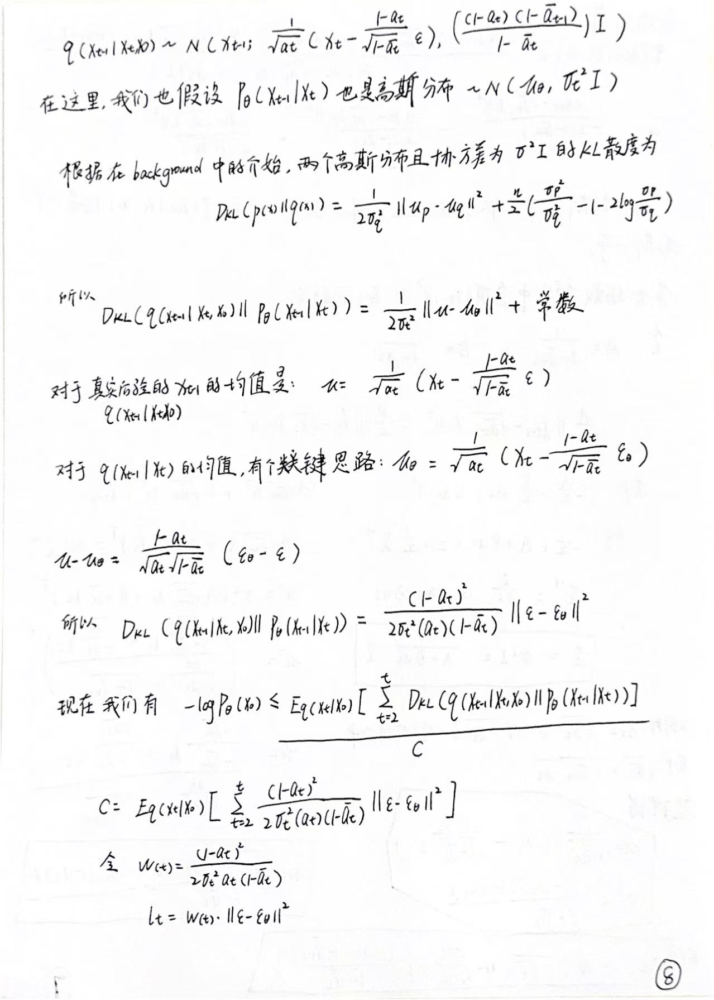

Denoising Diffusion Probabilistic Models的数学原理和代码实现
1.Introduction
扩散模型现在大家都耳熟能详，但是扩散模型具体是如何工作的，背后的数学原理是什么，我是不清楚的。所以在这个 blog 中，我会尽力的向大家讲清楚，扩散模型是如何工作的。简而言之，扩散模型分为两个步骤，一个步骤是加噪音（add noise），加的是高斯噪音，另一个步骤是去噪音,是使用 U-net去预测噪音，然后在 noisy image上去除掉这个噪音。
再开始阅读这个 blog 之前，我需要先证明和介绍一些需要用到的结论。
2.Background knowledge
协方差矩阵为单位矩阵的高斯分布，每一个维度是相互独立的。

这个证明主要是为了说明，扩散模型中的 forward process 中所加的噪音ϵ，是服从N(0,I)，这个 I 是单位矩阵，也就是意味着加到每一个 pixel 的噪音相互独立。
协方差矩阵为 I，意味着，Cov(xi,xj),当 i==j时，为 1，当 i!=j时,为 0。
但是需要特别强调的一点是，如果 Cov(X,Y)==0，只能说明 X与 Y没有线性关系，但可能有非线性关系，也不能推出来 X 与 Y相互独立。
但是在高维高斯分布中，协方差矩阵为单位矩阵的时候，各个随机变量相互独立。
Jensen’s Inequality

Jensen 不等式 描述了 凸函数 的函数值与函数值的期望之间的关系。
这是一个关于凸函数的性质，那什么是凸函数呢？
从函数图像上看，连接曲线上两点的弦（线段）位于曲线的 上方（或重合）的函数是凸函数。
这个不等式将会在损失函数部分用到。
KL divergence（Kullback-Leibler divergence）


KL 散度是用来衡量两个分布，P 和 Q 之间的相似性的，如果 P==Q，KL散度为零。
KL 散度还有以下两个性质：


KL 散度的非负性将会在损失函数中的Evidence Lower Bound中用到。
KL divergence 与 高斯分布
如果我们要衡量的两个分布 P 和 Q都是高斯分布的话，这两个高斯分布之间的 KL 散度有解析闭式解！

特别的当：
有：

3.Diffusion model
forward process (Add Gaussian noise)


Reverse process
关于反向过程推导的思路，我借鉴了Deepia的关于 diffusion 模型的视频中的思路。
推导的思路大致是从 negative log likelihood 开始，其中用到了一些 trick，包括 Jensen’s Inequality,Evidence lower bound, KL divergence, 最后用到了辛钦大数定律(n趋近于无穷大时，算数平均数依概率收敛于期望)
篇幅较长，其中重要的公式我会标记一下的。开始我们的推导吧！


